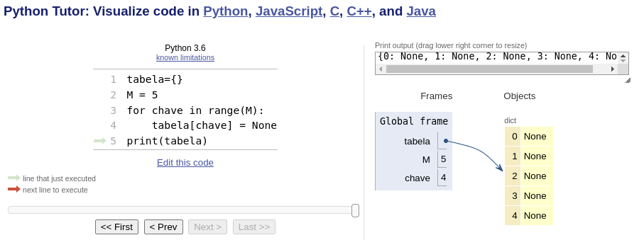
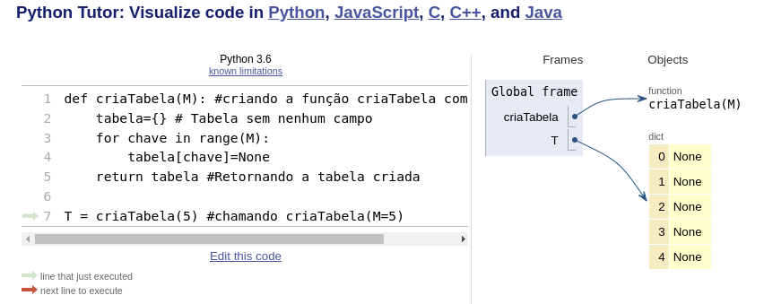
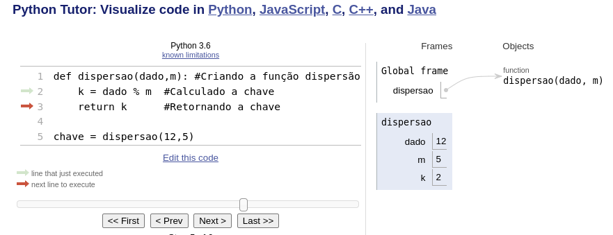
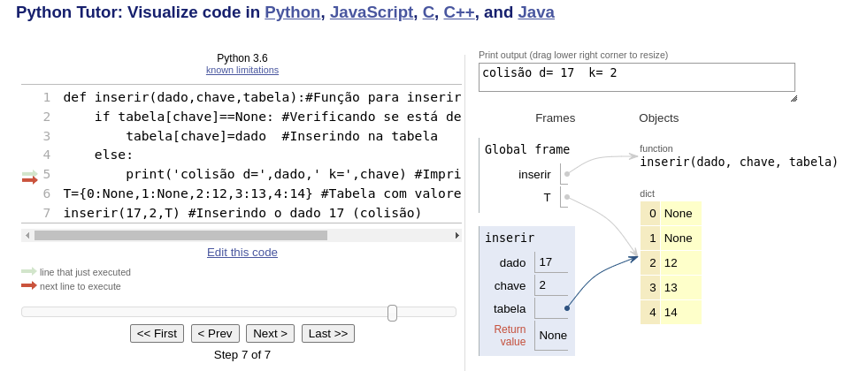
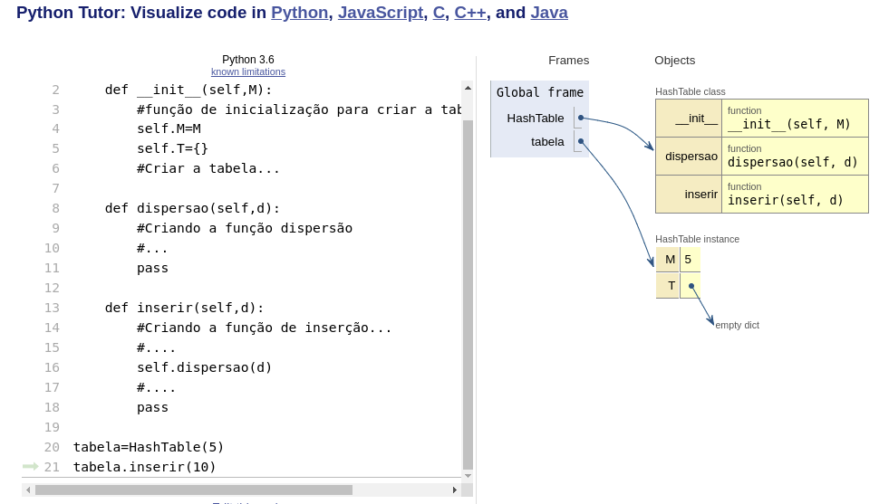
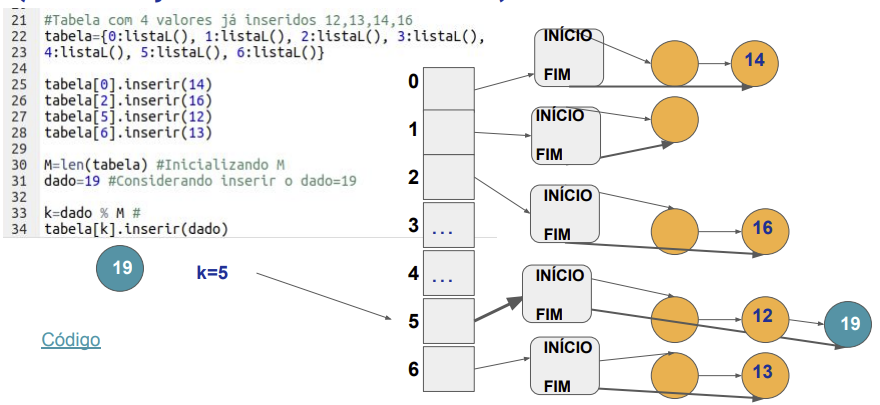
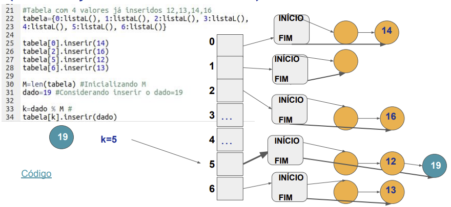

Disciplinas
-
ESTRUTURA DE DADOS-T01-2024-1 Concluído
Materiais
Vídeo 3 - [UFMS Digital] Estrutura de Dados - Módulo 1 - Unidade 1 - Parte 3. sendProf° ministrante: Dr. Jonathan de Andrade Silva.
Conteúdo
Tabelas de Dispersão: Hash.
Implementação em Python.PARTE 3
Tabela de Dispersão (dicionário)
- Podemos representar a tabela por meio da estrutura de dados em Python, conhecida como dicionário;
- Precisamos do par:
- Exemplo, tabela com M=3:
- tabela = {k1 : v1, k2 : v2, k3 : v3}
- tabela = {‘A’ : 0, ‘B’ : 0, ‘C’ : 0}
- tabela[‘B’]=1
- tabela = dict(k1 = v1, k2 = v2, k3 = v3)
- k deve ter padrão de nome de variável.
- Vamos criar uma tabela com M=5 para d=[12,13,14,17];
- Criar a tabela e inicializar as posições com vazio:
- (o que seria vazio? 0, -1, None,...); vamos usar None.
- Criar a função de dispersão:
- vamos usar o método da divisão: F(dado) = dado % M;
- Para cada dado, aplicar F para encontrar a chave e inserir o valor/dado na tabela.
- Antes de inserir deve-se identificar a colisão, mas como?
- Se tabela[chave] == ? None
Vamos criar uma tabela com M=5;
Vamos colocar o código de criação da tabela dentro de uma função chamada criaTabela(M);
tabela-de-dispersao.py Criar a Função Dispersão:
Vamos criar uma função chamada dispersao(dado,m);
- função de dispersão será o método da divisão
tabela-de-dispersao1.py Verificar colisão e inserir na tabela:
- Vamos criar uma função chamada inserir(dado, chave, tabela);
- temos que verificar se está “vazia” tabela[chave]==None;
- caso contrário imprimir que houve colisão.
tabela-de-dispersao2.py
- Agora é só combinar os códigos e ter a implementação completa da inserção na tabela de dispersão com o método da divisão.
- Podemos até melhorar a organização do código utilizando orientação a objeto para criar uma classe associada à tabela de dispersão e definir as funções para criar, inserir, buscar, remover e imprimir a tabela de dispersão.
Implementação com classe.
Tratamento de Colisão (Endereçamento Aberto).
- Com as sondagens vamos ter que percorrer a tabela até encontrar uma posição disponível (“vazia”);
- Aplicado em todas as operações (ex: inserção, remoção e busca);
- Precisamos definir a estratégia de sondagem e ajustar:
- A função de dispersão;
- A função de inserção (busca ou remoção) que na ocorrência de colisão tem que continuar buscando uma posição vazia (inserir) ou o dado (busca e remoção).
Tratamento de Colisão (Endereçamento Encadeado).
- Vamos implementar, além da tabela, uma segunda estrutura de dados (Lista ligada):
- 2 ponteiros (início e fim) e nó cabeça;
 

Resumo (implementações).
- Nas técnicas de sondagem temos que percorrer a tabela para, por exemplo, buscar um valor, custo O(M);
- Já na técnica encadeada temos que percorrer uma lista para buscar um valor, O(L), onde L é o tamanho da lista;
- O ideal é que L tenha um tamanho médio L/N , indicando uma distribuição equilibrada das N chaves nas listas;
- Se a maior lista na tabela tem tamanho L = M, temos que o custo da busca fica, no pior caso, igual às técnicas de sondagem, ou seja, O(L)=O(M).
Referências.
- SZWARCFITER, Jayme Luiz; MARKENZON, Lilian.
- Estruturas de dados e seus algoritmos. 3. ed. Rio de Janeiro, RJ: LTC, 2010. ISBN 9788521629955.
- CORMEN, Thomas. Algoritmos: teoria e prática. Rio de Janeiro: GEN LTC, 2013. ISBN 9788595158092.